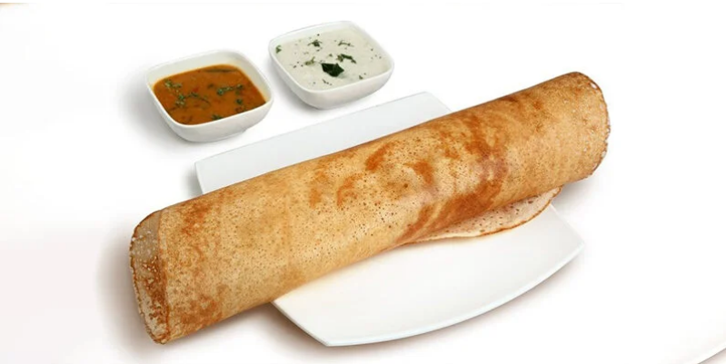

Let's make dosa!

ingredients you need :
for dosa batter
- 1 cup parboiled rice (idli rice)
-
- 1 cup regular rice (sona masoori or any short grain rice)
-
- 1/2 cup urad dal (split black gram)
-
- 2 tbsp chana dal (split Bengal gram)
-
- 1/4 tsp fenugreek seeds (methi)
-
- Water (as required for soaking and grinding)
-
- Salt (to taste)
-
for cooking
- ghee or oil (for greasing the pan and cooking dosa)
instructions
Preparing the batter
- rinse and soak
- Rinse the rice and urad dal separately in water 2-3 times.
- Soak the parboiled rice, regular rice, and chana dal together in enough water for 4-5 hours.
- Soak the urad dal and fenugreek seeds together in enough water for 4-5 hours.
- grind
- Drain the soaked rice and dal.
- In a blender or wet grinder, first grind the urad dal and fenugreek seeds with water to a smooth and fluffy batter. Transfer to a large bowl.
- Next, grind the rice and chana dal with water to a smooth batter. Add this to the urad dal batter.
- Mix both batters well. The consistency should be flowing but not too runny.
- ferment
- Add salt to the batter and mix well.
- Cover the bowl and let it ferment overnight or for 8-12 hours in a warm place. The batter will rise and become airy.
making dosa :
- heat the pan
- Heat a non-stick or cast-iron tawa (griddle) on medium heat. Ensure the pan is hot but not smoking.
- pour and spread
- Pour a ladleful of batter in the center of the pan. Using the back of the ladle, spread the batter in a circular motion to form a thin dosa.
-
- cook
- Drizzle a few drops of oil or ghee around the edges and on the dosa.
- Cook until the edges start to lift and the bottom becomes golden and crispy. You can flip the dosa if you prefer, or fold it directly onto the plate.
- serve
- Serve hot with chutney, sambar, or any filling of your choice.